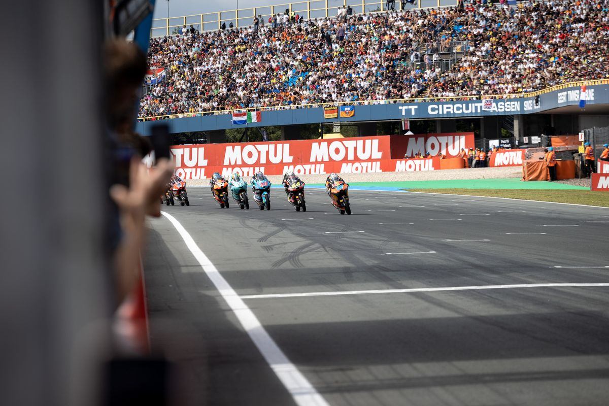
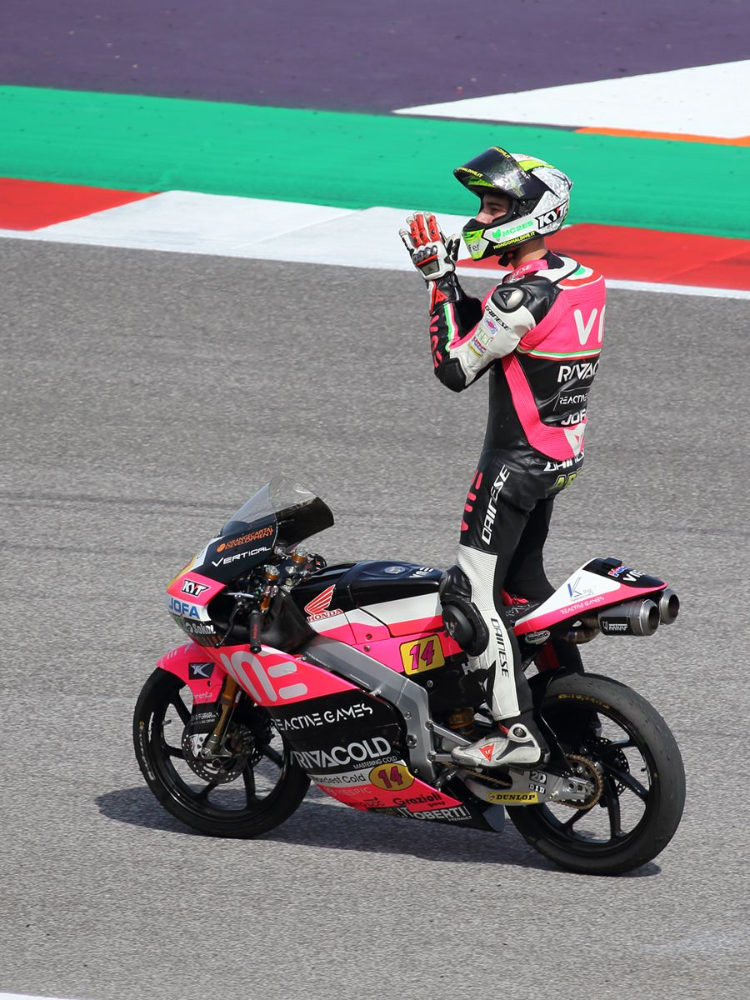
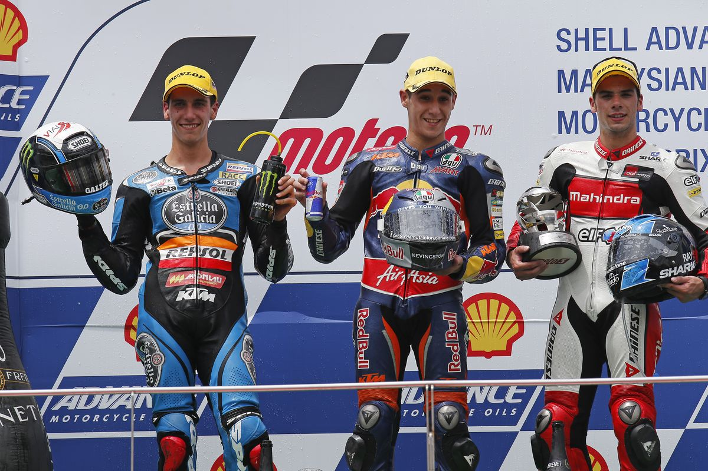

Indonesia punya kabar manis dari dunia balap hari ini, Minggu 1 November 2026. Veda Ega Pratama, pembalap 17 tahun asal Gunungkidul, Yogyakarta, finis kedua di balapan Moto3 Malaysia 2026 di Sirkuit Internasional Sepang. Ini bukan sekadar podium: belum pernah ada pembalap Indonesia yang finis setinggi ini di kejuaraan dunia Moto3. Menurut Bola.net, ini adalah pencapaian terbaik dalam karier balap Veda di Moto3.
Dari Grid Kedelapan, Veda Salip Satu per Satu
Veda memulai balapan dari posisi kedelapan. Begitu lampu hijau menyala, ia langsung merangsek naik dan bergabung dengan rombongan depan yang diisi para pembalap Spanyol plus satu pembalap tuan rumah Malaysia, Hakim Danish.
Pertarungan posisi dua dan tiga berlangsung sengit sepanjang 15 putaran. Veda beberapa kali bertukar posisi dengan Alvaro Carpe, David Almansa, dan Hakim Danish. Pada lap kedelapan, ia menyalip Danish dan Carpe sekaligus untuk naik ke posisi kedua, walau Carpe sempat merebutnya kembali.
Drama berlanjut sampai tikungan pamungkas. Veda melancarkan serangan balasan, merebut lagi posisinya, dan menutup semua celah sampai garis finis. Ia finis kedua dengan selisih 3,734 detik dari sang pemenang, Maximo Quiles dari CFMOTO Gaviota Aspar Team. Carpe finis ketiga dengan selisih 4,184 detik, Danish keempat dengan selisih 4,410 detik, dan Almansa kelima. Posisi tiga sampai lima finis berdekatan, semuanya di bawah lima detik dari pemenang.

Foto: Manel Gimeno Vilar, domain publik, via Wikimedia Commons
Anak Gunungkidul yang Naik Kelas ke Panggung Dunia
Veda Ega Pratama lahir di Wonosari, Gunungkidul, pada 23 November 2008. Kecintaannya pada balap menurun dari ayahnya, Sudarmono, mantan pembalap nasional. Veda mulai naik minibike umur lima tahun, ikut balapan pertamanya umur enam tahun, dan menjuarai Kejuaraan Nasional Balap Underbone pada 2019. Di awal kariernya ia juga ditempa lewat program Astra Honda Racing School.
Jalan menuju Grand Prix dimulai dari Asia Talent Cup. Veda tampil sebagai wildcard di Mandalika pada 2021, finis ketiga klasemen pada 2022, lalu menjuarai Asia Talent Cup 2023 dengan sembilan kemenangan dari dua belas balapan. Ia jadi pembalap Indonesia pertama yang menjuarai ajang itu.
Dari sana ia naik ke Red Bull MotoGP Rookies Cup dan finis runner-up pada 2025, lalu dikontrak Honda Team Asia untuk debut semusim penuh di Moto3 2026. Di kelas dunia ini ia memakai nomor balap 9, setelah sebelumnya memakai nomor 54 di jenjang pembinaan.

Foto: DaRealOriginalChangster, CC BY-SA 4.0, via Wikimedia Commons
Kenapa Podium Ini Spesial buat Indonesia
Pertama, ini rekor. Veda adalah pembalap Indonesia pertama yang finis di podium kedua sepanjang sejarah kejuaraan dunia Moto3. Podium pertamanya musim ini ia raih di GP Brasil pada 22 Maret 2026, waktu itu finis ketiga.
Kedua, ini penebusan. Pekan lalu di Australia, Veda sempat merebut pole position pertama untuk Indonesia di Moto3, tapi balapannya batal karena cuaca buruk. Di Sepang ia tidak start dari depan, tapi pulang membawa trofi.
Ketiga, poinnya makin tebal. Veda kini mengoleksi 131 poin dan naik ke peringkat tujuh klasemen dunia Moto3 2026. Buat pembalap yang baru menjalani musim debutnya, itu capaian yang luar biasa.
Usai balapan, Veda mengaku bersyukur bisa mengunci posisi kedua dan mempersembahkan podium ini untuk keluarga serta semua pihak yang mendukungnya. Keluarganya bahkan hadir langsung di Sepang untuk menyaksikan momen bersejarah ini.
Ada juga momen kocak sesudah balapan: Veda sempat menawarkan belalang goreng kepada sang pemenang, Maximo Quiles, yang langsung mencuri perhatian penonton. Sementara itu, Quiles sudah mengunci gelar juara dunia Moto3 2026 sejak seri Mandalika, dan kemenangan di Sepang adalah kemenangan ke-11nya musim ini.

Foto: Box Repsol, CC BY 2.0, via Wikimedia Commons
Tiga Seri Tersisa, Begini Cara Nontonnya
Musim 2026 belum selesai. Moto3 masih menyisakan tiga seri: GP Qatar pada 6 sampai 8 November 2026, lalu GP Portugal dan GP Valencia. Peluang Veda menambah podium, bahkan meraih kemenangan perdana, masih terbuka lebar.
Buat kamu yang mau nonton, balapan Moto3 dan MotoGP biasanya tayang di Trans7 lewat TV digital, gratis. Hari ini saja balapan Moto3 Malaysia tayang di Trans7 mulai pukul 11.00 WIB. Kalau mau yang lengkap dari sesi latihan sampai kualifikasi, ada SPOTV yang bisa diakses lewat Vidio dan Vision+.
Catat jadwalnya dan cek ulang mendekati hari balapan, karena jam tayang TV kadang berubah. Tiga seri terakhir ini sayang banget buat dilewatkan kalau kamu sudah ikut deg-degan nonton Veda di Sepang hari ini.
Nama Indonesia sekarang tercatat makin dalam di peta balap dunia. Pantau terus Veda di tiga seri terakhir, siapa tahu kemenangan perdana datang lebih cepat dari yang kita kira.
Sumber dan Info Resmi
Fakta dan detail di artikel ini merujuk ke sumber berikut, yang sudah diverifikasi isinya:
- Oto.com: Cetak Sejarah, Veda Ega Pratama Raih Podium Kedua di Moto3 Malaysia: start grid kedelapan, finis P2 dengan gap 3,734 detik, pembalap Indonesia pertama finis podium kedua sepanjang sejarah Moto3, 131 poin peringkat 7 klasemen.
- Bola.net: Runner-up di Sepang, Veda Ega Pratama Ukir Pencapaian Terbaik di Moto3: pencapaian terbaik karier, podium kedua musim ini (sebelumnya P3 Brasil), tiga seri tersisa (Qatar, Portugal, Valencia), keluarga hadir di Sepang.
- RCTI+: Ini Kata-kata Veda Ega Pratama Usai Raih Podium Kedua di Moto3 Malaysia 2026: asal Gunungkidul, start P8, podium dipersembahkan untuk keluarga dan pendukung, 131 poin peringkat 7, pole Australia pekan lalu batal karena cuaca, seri berikutnya Qatar 6-8 November 2026.
- Skor.id: Hasil Moto3 Malaysia 2026, Veda Ega Pratama Raih Podium Kedua: usia 17 tahun, podium perdana musim ini di GP Brasil 22 Maret 2026.
- MotoGP.com: Profil Veda Pratama: lahir 23 November 2008 di Wonosari, Gunungkidul, ayah Sudarmono mantan pembalap nasional, minibike umur 5, balapan pertama umur 6, wildcard ATC 2021, peringkat 3 ATC 2022, juara ATC 2023, Rookies Cup 2024, runner-up Rookies Cup 2025, dikontrak Honda Team Asia untuk Moto3 2026.
- MotoGP.com: Who Is Veda Pratama: nomor balap 9 di Moto3 (sebelumnya 54), juara nasional underbone 2019, pembalap Indonesia pertama juara Asia Talent Cup, runner-up Rookies Cup 2025.
- Topik.id: Hasil Moto3 Malaysia 2026: Quiles menang dengan waktu 33:07,63, sudah mengunci gelar juara dunia Moto3 2026 sejak seri Mandalika 11 Oktober 2026.
- Crash.net: Moto3 Malaysia 2026: kemenangan ke-11 Quiles musim ini, hasil P1 sampai P5 beserta gap (Carpe +4,184, Danish +4,410, Almansa +4,914).
- Wirandhika: Veda Ega Pratama Podium Kedua Moto3 Malaysia: jalannya duel, lap 8 Veda salip Danish dan Carpe ke P2, Carpe sempat merebut kembali, Veda amankan di lap terakhir.
- Vakansiinfo: Start dari P8 Veda Ega Pratama Finis Kedua: momen Veda menawarkan belalang goreng kepada Quiles sesudah balapan.
- Piknikdong: Link Live Streaming MotoGP Malaysia 2026: Trans7 menayangkan balapan lewat TV digital gratis, streaming lengkap SPOTV lewat Vidio dan Vision+ (berlangganan).
- Rival.co.id: Jadwal Acara TV Hari Ini Minggu 1 November 2026: Trans7 menayangkan Moto3 Malaysia hari ini mulai pukul 11.00 WIB.
- Wikipedia Bahasa Melayu: Veda Pratama: ditempa lewat Astra Honda Racing School, juara Asia Talent Cup 2023 dengan sembilan kemenangan dari dua belas balapan.